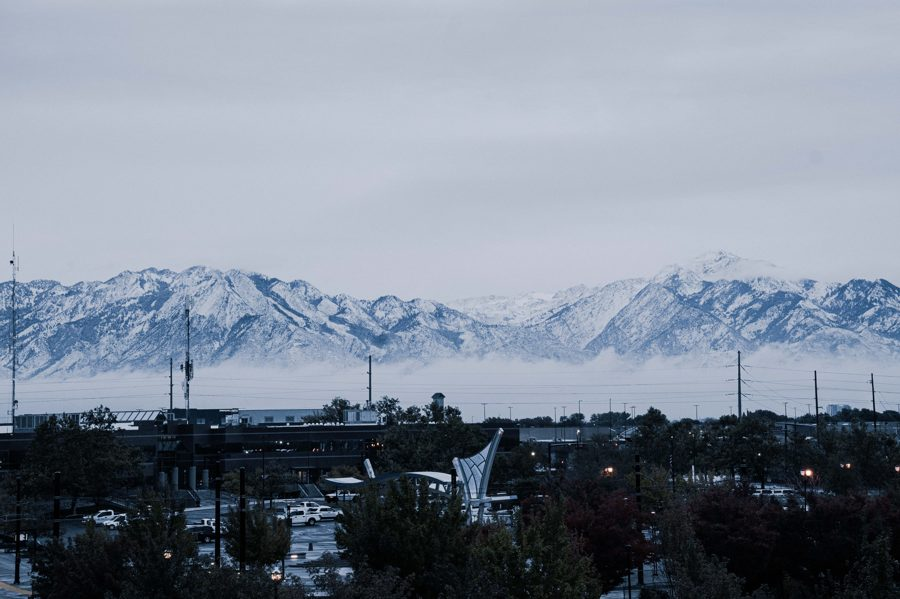

Route overview
Route overview
Welcome to the short and intense but super fun road trip that you're about to attend.
On 10/4 night, drive ahead to a Grand Canyon gateway town (Williams/Flagstaff) so 10/5 morning is a short hop straight into the South Rim. 10/6 is a rest day back home.
Airport pickup
10/1
10/2–10/3
10/3 en route
10/3–10/4
10/4 night
10/5
Itinerary
Day by day

10/1 (Wed)
Tiff arrives, get settled
Highlights: airport pickup, grocery run
- 18:30–20:30Airport pickup for Tiff, grocery run for road-trip supplies.
- Dinner: arrival dinner (American food).
Stay: at home.

10/2 (Thu)
Head to Bryce Canyon National Park
Highlights: unique red-rock hoodoo formations, trail hiking
- 08:00–12:00Drive to Bryce Canyon National Park.
- 13:30–17:30Sunrise Point & Navajo Loop Trail.
- Lunch: Canyon Diner at Ruby's Inn (fresh pizza/quick bites, budget-friendly) or Sevier Coffee Co. & Cafe (burritos, sandwiches).
- Dinner: Showdowns.
Stay: Hampton Inn & Suites Springdale/Zion National Park (Hilton).
Other options: Entire Cabin in Panguitch · Twilight 3: 2 King Beds · Wander Camp Bryce Canyon
Other options: Entire Cabin in Panguitch · Twilight 3: 2 King Beds · Wander Camp Bryce Canyon

10/3 (Fri)
Bryce sunrise ➔ on to Page ➔ south to Phoenix
Highlights: Bryce morning views, Horseshoe Bend, cross-state scenic drive
- 08:00–10:00Morning views at Bryce.
- 10:00–15:30Drive to Page, AZ, visit Horseshoe Bend, then continue south to Phoenix.
- 15:30–19:30Continue south, arrive in Phoenix.
- Lunch: Big John's Texas BBQ.
- Dinner: Pizzeria Bianco (James Beard Award-winning wood-fired pizza, ~$20–30pp, casual, no reservations — expect a wait).

10/4 (Sat)
Class day ➔ tennis with Max ➔ drive to Grand Canyon gateway
Highlights: free morning at the hotel, Hole in the Rock, tennis together once Max is out of class, tacos to go, then drive ahead to the Grand Canyon area that night
- Morning: Tiff stays at the hotel and takes it easy until checkout.
- Daytime: Max's class / Tiff free to explore — hike Hole in the Rock (Papago Park, easy hike, great sunset views).
- Lunch: Tiff picks up something small to bring to school and eat with Max.
- 17:00–18:00Tennis with Max at Granada Park (free public courts, ~1.7 mi from the Biltmore) right after he's out of class.
- 18:00–18:30Grab tacos to go from Blanco Cocina + Cantina, then hit the road.
- 18:30–22:00Evening drive to the Grand Canyon gateway (~3–3.5 hrs), eating tacos on the way. Optional detour: the Blue Arches McDonald's in Sedona (the only turquoise McDonald's in the world) — routing through Sedona on 89A instead of the direct I-17 adds roughly 30–45+ min, so only worth it if you're not rushing.

10/5 (Sun)
Grand Canyon South Rim ➔ drive home
Highlights: classic Grand Canyon views, straight home that evening
- 09:00–10:00Drive into Grand Canyon South Rim.
- 10:00–15:30Mather Point, Rim Trail, Desert View, then set off for home.
- 15:30–22:30Drive home.
- Lunch: El Tovar Dining Room.
- Dinner: quick bite along the way home.
Back home.

10/6 (Mon)
Home, chill and recover
Highlights: a full day at home to recharge before back to normal life
- All day: rest and relax.
- Errands: Walmart and Trader Joe's.
- Cook at home.
At home.
Reference
Quick reference
Sights / trails
- Sunrise Point / Navajo Loop (Bryce)
- Horseshoe Bend (Page)
- Mather Point / Rim Trail / Desert View (Grand Canyon)
Accommodation (Hilton family)
- At home — 10/1
- Hampton Inn Springdale/Zion — 10/2 (Hilton)
or: Entire Cabin in Panguitch / Twilight 3 / Wander Camp Bryce Canyon - Arizona Biltmore, LXR Hotels & Resorts — 10/3, 10/4
- Hampton Inn Williams or Hilton Garden Inn Flagstaff — 10/4 night (Grand Canyon gateway)
Reserve ahead
- El Tovar Dining Room (historic restaurant, book early)
Play tennis
- Granada Park — 4 free public courts, ~1.7 mi from the Biltmore; the 10/4 pick, right after Max is out of class
- Arizona Biltmore, 7 courts — at the hotel, guests can book directly (court fee applies)
- Madison Park — free public courts, ~4 mi from the Biltmore
- Camelback Village Racquet & Health Club — private club, 7 courts, guest fee required
National park passes
- Bryce Canyon $35/vehicle, 7-day
- Grand Canyon $35/vehicle, 7-day
- Both parks $70, or America the Beautiful annual pass $80
Preparation
To-do
Book 10/2 stay — Hampton Inn Springdale/Zion (Hilton) ~$180–260/night, or: Entire Cabin in Panguitch / Twilight 3: 2 King Beds / Wander Camp Bryce Canyon — availability and pricing change, double-check before you go
Book 10/3–10/4 stay (2 nights) — Arizona Biltmore, LXR Hotels & Resorts ~$250–400+/night, 5-star resort (historic 1929 luxury resort, 39 acres, multiple pools)
Book 10/4 night stay — Hampton Inn Williams or Hilton Garden Inn Flagstaff ~$150–220/night
Reserve El Tovar Dining Room (10/5 lunch, historic restaurant — book well ahead)
National park passes — $35/vehicle each at Bryce and Grand Canyon, or buy the America the Beautiful annual pass ($80) which covers both plus other parks
Check international visitor surcharge — starting 2026, some national parks add a $100/person surcharge for non-US-resident visitors — confirm on the official site before you go if it applies
Decide + book Arcosanti tour — experimental architecture site in Mayer, AZ, right on the I-17 corridor, so it works as a stop on 10/3 (Page → Phoenix), 10/4 (Phoenix → Williams/Flagstaff), or 10/5 (Grand Canyon → home) — still deciding which day. Day visitors need a guided tour to see the architecture (~1 hr), Thu–Sun only, book ahead via arcosanti.org/tours or (928) 632-7135.
Preparation
Packing list
Bryce (~8,000 ft) and the Grand Canyon rim get cold at sunrise/night in October (約 -1–4°C) but warm up fast in the sun (約 16–21°C) — pack layers.
Road trip essentials
- Snacks (trail mix, granola bars, chips, fruit)
- Water bottles / cooler
- Phone car mount + charging cables
- Portable power bank
- Offline maps downloaded (spotty signal near Bryce/Grand Canyon)
- Sunglasses
- Travel pillow / blanket
Tennis (10/4, with Max at Granada Park)
- Tennis rackets
- Tennis balls
- Tennis shoes
- Hats / visors
- Sunscreen
- Change of clothes for after
Hiking (Bryce & Grand Canyon)
- Hiking shoes/boots
- Warm layer / fleece for sunrise viewpoints
- Light jacket (packable)
- Sun hat
- Refillable water bottle
- Small daypack
- Sunscreen + lip balm
Documents & extras
- ID / passport
- Hotel & restaurant confirmations
- National park pass confirmation
- Camera + extra batteries/SD card
- Swimsuit (Arizona Biltmore pools)